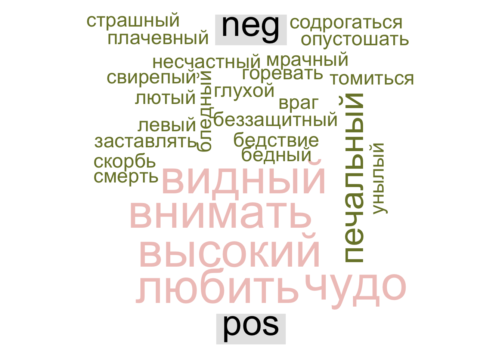

remotes::install_github("dmafanasyev/rulexicon")12 Эмоциональная тональность
12.1 Анализ тональности
Анализ тональности текста (англ. Sentiment analysis) — задача компьютерной лингвистики, заключающаяся в определении эмоциональной окраски (тональности) текста и, в частности, в выявлении эмоциональной оценки авторов по отношению к объектам, описываемым в тексте.
Анализ тональности – это частный случай бинарной (позитивная / негативная) или многоклассовой (радость / гнев / обида и т.п.) классификации, хотя иногда бывает также необходимо оценить эмоциональную окрашенность текста по заданной шкале.
О том, как в решении подобных задач могут быть полезны методы машинного обучения, мы поговорим в следующих уроках, а здесь речь пойдет о достаточно простом и в то же време эффективном подходе, основанном на тональных словарях (англ. affective lexicons). Тональный словарь представляет из себя список слов со значением тональности для каждого слова.
Сравнивая текст (или отрывок текста) со словарем, мы можем вычислить тональность для всего текста (или отрывка). Словари эмоциональной тональности размечаются вручную, полуавтоматически или автоматически на основании уже существующих тезаурусов, при этом используются различные шкалы:
- бинарная: negative / positive (-1 / 1)
- тринарная: бинарная + 0 (neutral)
- ранжированная: например, от -5 до 5
В некоторых случаях дополнительно вводятся различия между оценочной лексикой (“неряшливый”) и негативным фактом (“кража”) и т.п.
12.2 Метод словарей
12.2.1 Лексиконы для русского языка
Пакет с лексиконами устанавливается напрямую из GitHub.
Начало работы.
library(rulexicon)
library(tidyverse)
library(tidytext)Русский язык входит в языков, для которых Й. Чен и С. Скиена собрали оценочную лексику (Chen и Skiena 2014). Их лексикон построен на основе графа знаний, связывающего слова на разных языках (на основе Wiktionary, Google Translate, транслитерационных ссылок и WordNet). Слова оцениваются по бинарной шкале ( -1 / 1).
set.seed(0211)
chen_skiena <- hash_sentiment_chen_skiena
sample_n(chen_skiena, 10)Словарь AFINN содержит 7268 оценочных слов. Их тональность оценивается по шкале от -5 (крайне негативная) до 5 (в высшей степени положительная). Например, слово “адский” имеет оценку -5, а слово “ангельский” – +5.
set.seed(0211)
afinn <- hash_sentiment_afinn_ru
sample_n(afinn, 10) |>
print() token score
1 экстатический 1.7
2 знаковый 1.7
3 счастливчик 5.0
4 суматошный -3.3
5 гад -5.0
6 выразительный 5.0
7 жутковатый -5.0
8 креативность 5.0
9 обнадёживать 2.5
10 привлекательно 5.0NRC** для русского языка – это переведенная версия списка положительных и отрицательных слов Mohammad & Turney (2010). Таблица содержит 5179 слов с не нейтральными оценками. Бинарная шкала: -1 / 1.
set.seed(1102)
nrc <- hash_sentiment_nrc_emolex_ru
sample_n(nrc, 10)12.2.2 Опрятный подход
Согласно Silge и Robinson (2017), анализе эмоциональной тональности в духе tidy data предполагает следующий алгоритм работы:

Прежде всего текст делится на токены (или лемматизируется), затем каждому токену присваивается некое значение тональности, после чего эти значения суммируются и визуализируются.
Прежде всего текст необходимо токенизировать, лемматизировать и привести в опрятный формат. Можно загрузить уже подготовленные данные по ссылке.
load("../data/liza_tbl.Rdata")Разделим весь текст “Лизы” на отрывки по 100 слов: это позволит понять, как меняется эмоциональная тональность произведения по мере развития сюжета.
liza_tbl <- liza_tbl |>
filter(upos != "PUNCT") |>
select(lemma) |>
rename(token = lemma) |>
mutate(chunk = round(((row_number() + 50) / 100), 0))
liza_tblВ тексте чуть более 5000 слов, у нас получился 51 отрывок.
12.2.3 Модификация лексикона
Современные лексиконы могут не очень подходят для анализа классической литературы. Например, в лексиконе AFINN, доступном в пакете rulexicon, слово “старый” имеет отрицательную оценку, как и слово “чувствительный”.
Код ниже показывает, как можно удалить слово или поменять его знак в R. Разумеется, все то же самое можно сделать вручную, сохранив лексикон локально в виде файла.
lex <- hash_sentiment_afinn_ru |>
filter(token != "старый")
lex <- lex |>
mutate_at(vars(score), ~ case_when(token == "чувствительный" ~ 1.7,
TRUE ~ .))
lex |>
filter(str_detect(token, "чувств"))12.2.4 Соединение лексикона с документом
Стоп-слова, то есть слова, не несущие никакой смысловой нагрузки, нам не нужны, но удалять их отдельно нет смысла: мы соединим, при помощи функции inner_join(), документ с одним из лексиконов, в котором не будет стоп-слов. Функция inner_join() работает так:

liza_sent <- liza_tbl |>
inner_join(lex)
liza_sentЗдесь “горе” – ошибка лемматизации (“стоя на сей горе…”).
Сложив положительно и отрицательно окрашенную лексику для каждого отрывка, получаем значение, позволяющее судить о доминирующей тональности:
liza_chunk_sent <- liza_sent |>
group_by(chunk) |>
summarise(sum = sum(score)) |>
arrange(sum)
liza_chunk_sentДовольно неожиданно, что самый негативный отрывок находится не в конце повести, ближе к трагической развязке, а почти в начале (отрывок 5, ср. отрывки 3 и 4 рядом).
12.3 Визуализации
12.3.1 Сравнительное облако слов
Представим эмоционально окрашенную лексику отрывков 3-5 в виде сравнительного облака слов. Палитру берем отсюда.
library(reshape2)
library(wordcloud)
library(paletteer)
pal <- paletteer_d("rcartocolor::ArmyRose")
# добавляем новый столбец для удобства визуализации
liza_sent_class <- liza_sent |>
mutate(tone = case_when( score >= 0 ~ "pos",
score < 0 ~ "neg"))
set.seed(0211)
liza_sent_class |>
filter(chunk %in% c(3, 4, 5)) |>
count(token, tone, sort = TRUE) |>
acast(token ~ tone, value.var = "n", fill = 0) |>
comparison.cloud(colors = c(pal[1], pal[5]),
max.words = 99)
Здесь видно, что негативная тональность в этой части не связана с судьбой героев: об этом говорят такие слова, как “лютый”, “враг”, “свирепый”. Рассказчик, глядя на заброшенный Симонов монастырь, вспоминает о “печальной истории” Москвы. Если верить нашей модели, самый мрачный фрагмент повести посвящен не судьбе бедной девушки, а “глухому стону времен”:
Иногда на вратах храма рассматриваю изображение чудес, в сем монастыре случившихся, там рыбы падают с неба для насыщения жителей монастыря, осажденного многочисленными врагами; тут образ богоматери обращает неприятелей в бегство. Все сие обновляет в моей памяти историю нашего отечества — печальную историю тех времен, когда свирепые татары и литовцы огнем и мечом опустошали окрестности российской столицы и когда несчастная Москва, как беззащитная вдовица, от одного бога ожидала помощи в лютых своих бедствиях.
12.3.2 Ось времени
Таблица, которую мы подготовили, позволяет наглядно показать, как меняется тональность во времени – разумеется, речь идет о повествовательном времени, которое измеряется не в минутах, а в словах.
Обозначим как положительный или отрицательный каждый из отрывков, как мы это делали для слов.
liza_chunk_sent <- liza_chunk_sent |>
mutate(tone = case_when( sum >= 0 ~ "pos",
sum < 0 ~ "neg"))
liza_chunk_sentПалитра у нас уже сохранена.
library(showtext)
font_add(family = "vibes", "GreatVibes-Regular.ttf")
showtext_auto()
library(paletteer)
pal <- paletteer_d("rcartocolor::ArmyRose")
p1 <- liza_chunk_sent |>
ggplot(aes(chunk, sum, fill = tone)) +
geom_col(show.legend = F) +
scale_x_continuous(breaks = seq(0, 51, 5)) +
labs(title = "Эмоциональная тональность (без учета отрицаний)",
x = "повествовательное время",
y = NULL) +
theme_light() +
theme(axis.title = element_text(family = "vibes", size = 12, color = "grey40"),
title = element_text(family = "vibes", size = 16, color = "grey30"),
axis.text = element_text(family = "vibes", size = 12, color = "grey40")) +
scale_fill_manual(values = c(pal[1], pal[5]))
p1
В целом график получился осмысленным. Мы уже сказали выше про отрывки 3-4. Дальше немного скорби в отрывке 8 посвящено покойному отцу Лизы. В 11-м отрывке отразилась тревога матери за судьбу дочери: “коварно”, “обидеть”, “дурной” вносят вклад в настроение этого фрагмента. Это достаточно характерно для сентиментальной прозы с ее противопоставлением пороков городской жизни и пасторальных добродетелей.
У меня всегда сердце бывает не на своем месте, когда ты ходишь в город; я всегда ставлю свечу перед образ и молю господа бога, чтобы он сохранил тебя от всякой беды и напасти.
Еще два минимума: отрывки 31 и 34. В первом из них Лиза встревожена вестью о возможном замужестве с сыном крестьянина. Отрывок 34 – это падение Лизы:
Грозно шумела буря, дождь лился из черных облаков — казалось, что натура сетовала о потерянной Лизиной невинности.
На графике видно, что это место гораздо более эмоционально, чем эпизод самоубийства Лизы: именно после знаменитых карамзинских многоточий и тире события устремляются к трагическому финалу. О самой смерти девушки Карамзин говорит, конечно, с грустью, но без надрыва: “Тут она бросилась в воду”.
Отрывки 38, 39, 42 – Эраст отправляется на войну. Все, как положено, плачут, что зафиксировал и наш график.
Наконец, в отрывках 49-51 доминирует тема смерти, причем часть этих слов относится не к самой девушке, а к ее матери.
liza_sent_class |>
filter(chunk %in% c(49:51)) |>
filter(tone == "neg") |>
count(token, sort = T) |>
with(wordcloud(token, n, max.words = 100, colors = pal[2]))
В отрывке 15 несколько негативных слов имеют перед собой отрицания (“не подозревая”, “никакого худого намерения” и т.п.), поэтому к числу отрицательно окрашенных он отнесен ошибочно. К сожалению, это недостаток подхода, основанного на словарях, не принимающего в учет синтаксические связи в предложении.
Одно из самых простых решений заключается в том, что бы соединить отрицание и следующее за ним слово (или добавить отрицание ко всем словам до следующего знака препинания).
neg_sent <- "Старушка с охотою приняла сие предложение, не подозревая в нем никакого худого намерения."
str_replace_all(neg_sent, "( не | никакого )(\\w+)", " NEG_\\2")[1] "Старушка с охотою приняла сие предложение, NEG_подозревая в нем NEG_худого намерения."Чтобы систематически применить этот подход ко всему документу (или коллекции документов), необходим список отрицаний для выбранного языка. Список ниже не претендует на полноту, но иллюстрирует общий принцип.
negations <- c("никто", "никого", "никем", "ничто", "ничем", "ничего", "ни", "никакой", "никакого", "никаких", "никаким", "никак", "ничей", "ничьих", "нисколько", "никогда", "нигде", "никуда", "некого", "нельзя", "нечего", "незачем", "нет", "едва", "не", "ничуть")
regex <- str_c(negations, collapse = " | ")
regex <- paste0("( ", regex, " )(\\w+)")
regex[1] "( никто | никого | никем | ничто | ничем | ничего | ни | никакой | никакого | никаких | никаким | никак | ничей | ничьих | нисколько | никогда | нигде | никуда | некого | нельзя | нечего | незачем | нет | едва | не | ничуть )(\\w+)"load("../data/liza_tbl.Rdata")
text <- liza_tbl |>
filter(upos != "PUNCT") |>
pull(lemma) |>
str_c(collapse = " ")Заменяем отрицания и считаем статистику по отрывкам.
text <- str_replace_all(text, regex, " NEG_\\2")liza_NEG <- tibble(text = text) |>
unnest_tokens(token, text) |>
mutate(chunk = round(((row_number() + 50) / 100), 0)) |>
inner_join(lex) Joining with `by = join_by(token)`liza_NEG_chunk <- liza_NEG |>
group_by(chunk) |>
summarise(sum = sum(score)) |>
mutate(tone = case_when( sum >= 0 ~ "pos",
sum < 0 ~ "neg"))
liza_NEG_chunk Осталось заново построить график. Для сравнения оставим рядом старую версию.
library(gridExtra)
p2 <- liza_NEG_chunk |>
ggplot(aes(chunk, sum, fill = tone)) +
geom_col(show.legend = F) +
scale_x_continuous(breaks = seq(0, 51, 5)) +
labs(title = "Эмоциональная тональность (с учетом отрицаний)",
x = "повествовательное время",
y = NULL) +
theme_light() +
theme(axis.title = element_text(family = "vibes", size = 12, color = "grey40"),
title = element_text(family = "vibes", size = 16, color = "grey30"),
axis.text = element_text(family = "vibes", size = 12, color = "grey40")) +
scale_fill_manual(values = c(pal[1], pal[5]))
grid.arrange(p1, p2, nrow = 2)
Из-за изменения числа токенов отрывки сдвинулись, но незначительно. Бывший отрывок 15, как мы и ожидали, перешел в число положительно окрашенных (несмотря на ошибочную оценку слова “левый”).
Было:
# A tibble: 8 × 3
token chunk score
<chr> <dbl> <dbl>
1 принудить 15 -2.5
2 радость 15 5
3 тщетно 15 -2.5
4 ясный 15 3.3
5 левый 15 -3.3
6 подозревать 15 -2.5
7 никакой 15 -1.7
8 худой 15 -3.3Стало:
# A tibble: 7 × 3
token chunk score
<chr> <dbl> <dbl>
1 радость 15 5
2 тщетно 15 -2.5
3 ясный 15 3.3
4 левый 15 -3.3
5 хороший 15 3.3
6 добрый 15 5
7 ласковый 15 5 Помимо этого, повысилось абсолютное значение негативной тональности в последних отрывках, хотя на это повлияли не столько отрицания, сколько изменение числа слов и перераспределение их по отрывкам.
12.3.3 Тепловая карта
library(ggpage)
page_data <- liza_tbl |>
select(lemma) |>
rename(text = lemma) # required by ggpage_build()
page_data |>
ggpage_build(lpp = 22, character_height = 3) |>
rename(token = word) |> # required by join
left_join(lex) |>
rename(text = token) |>
mutate(neg = case_when(score < 0 ~ TRUE,
.default = FALSE)) |>
ggpage_plot(aes(fill = neg), page.number = "top-left") #+
labs(title = "Негативная лексика в «Бедной Лизе»", x = NULL, y = NULL) +
scale_fill_manual(values = c(pal[5], pal[1]),
labels = c("другая", "негативная"),
name = NULL) +
theme(axis.title = element_blank(),
title = element_text(family = "vibes", size = 16, color = "grey30"),
axis.text = element_blank(),
text = element_text(family = "vibes", size = 12, color = "grey30"),
)12.4 Бонус: трансформеры
12.4.1 Настройка окружения и конвейера
Для работы с трансформерами понадобится вирутальное окружение Python.
#install.packages("reticulate")
library(reticulate)
use_python("/usr/bin/python3")
py_config()Проверьте наличие модулей.
py_module_available("transformers")
py_module_available("torch")Если надо, установите.
py_install("transformers")
py_install("torch") Импортируем модули.
transformers <- import("transformers")Функция pipeline() — одна из ключевых в библиотеке transformers. Она позволяет создать удобный “конвейер” для решения конкретной задачи обработки естественного языка (например, анализа тональности, извлечения именованных сущностей и др.).
Под капотом она автоматически загружает необходимую модель, токенизатор и обеспечивает последовательный анализ текста: предварительную обработку (preprocessing), применение модели, а также постобработку (postprocessing) результатов. Всё это собирается в единый простой интерфейс, что позволяет использовать сложные технологии машинного обучения одним вызовом.
sentiment_pipeline <- transformers$pipeline(
"sentiment-analysis",
model="seara/rubert-tiny2-russian-sentiment"
)text_data <- c(
"Какая ужасная погода, гремит гром и сверкают жуткие молнии.",
"Мы очень довольны этой великолепной покупкой.",
"Лиза отдала цветы и взяла деньги."
)
results <- sentiment_pipeline(text_data)
results12.4.2 Классификация
liza_tbl <- tibble(text = read_lines("../files/karamzin_liza.txt"))
liza_tblresults <- sentiment_pipeline(liza_tbl$text)results_tbl <- tibble(
label = map_chr(results, function(x) x$label),
score = map_dbl(results, function(x) x$score)
)results_tbl |>
mutate(index = row_number()) |>
filter(label != "neutral") |>
mutate(score = case_when(label == "negative" ~ score * -1,
.default = score)) |>
ggplot(aes(index, score, fill = label)) +
geom_col(show.legend = F) +
scale_x_continuous(breaks = seq(0, 46, 2)) +
labs(title = "Эмоциональная тональность (BERT)",
x = "повествовательное время",
y = NULL) +
theme_light() +
theme(axis.title = element_text(family = "vibes", size = 12, color = "grey40"),
title = element_text(family = "vibes", size = 16, color = "grey30"),
axis.text = element_text(family = "vibes", size = 12, color = "grey40")) +
scale_fill_manual(values = c(pal[1], pal[5]))
12.5 Видео
12.6 Минихакатон
- Вместо домашнего задания к этому уроку прилагается сентиментальный минихакатон, подробности в группе.
Chen, Y., и S. Skiena. 2014. «Building Sentiment Lexicons for All Major Languages». Proceedings of 52nd Annual Meeting of the Association for Computational Linguistics, 383–89.
Silge, Julia, и David Robinson. 2017. Text Mining with R. O’Reilly. http://www.tidytextmining.com.